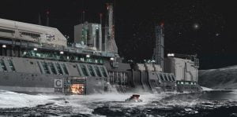

A calm market street is disturbed by two men running down the road shouting and pointing at something. People stop and stare at the two men, one shouting orders in to a concealed microphone on he’s wrist. A dark hooded person can suddenly be seen fleeing down one of the side alleys and the two men pursuits.The alley way is a dead end. “Damn!” the hooded person says. “Get your fucking hands in the air” Sounds sharply behind the hooded person and he throws he’s hands up in the air haf hartedly. “Back up, realy slow…” One of the two men commands. The hooded man slowly walks backwards and suddenly jumps to one side grabs he’s plasma gun and… A loud SMACK is heard as one of the two men gets a direct hit with a stunn gunn. One of the men pushes the now limp boddy over and takes of the hood. “Jepp… that’s Engalo allright. Call it in” He says with a crooked smile.
“Incoming call” sounds from the speakers in the cockpit. “Yes?” Engalo answers. “Hey dumbass!” sounds back from the speakers. “Cyraios, what do you want now?” Engalo answers while laughing. “I have arranged a meeting with a guy on Neumann Camp to get you that information you asked for” Cyraios says. “Neumann Camp in Shinrarta?!” Engalo answers. “Mehh… with that new black MKIV of yours, they won’t see you coming… are you back at that crash site?! When are you planning to tell me what the hell you are doing out there? Cyraios asks. “When I find it, I’ll tell you…” Engalo smirks. “You better, now get your ass over to Shinrarta. I’ll talk to you later. Cyraios out” Cyraios breaks the link.
“Back to Shinrarta…” Engalo mutters.
Engalo’s head feels heavy. A throbbing pain shoots trough him as he sits himself up. He look around a soothing furnished room. Calm brown coloured walls and a weak yellowish light fills the entirety room. With some efforts Engalo stumbles himself to his feet. Walking towards the door on the far left side. The door wont budge, not even when Engalo puts his weight against the door. It’s a solid wooden door. “It’s the nicest prison cell I’ve ever been in tho…” Engalo mutters. Engalo walks around the room, exploring every corner, no windows, no visible air ducts… nothing. Discouraged Engalo sits down in one of the lavish chairs. On a small coffee table beside the chair is there a bottle of Lavian brandy and some sort of cigar. “Fuck it” Engalo says to himself. pours himself a drink and lights one of the cigars. He turns the chair towards the door and leans back sipping the brandy.
“Is he awake?” Alexander Neumann asks. “Yes sir. He’s sipping Lavian brandie staring at the door sir” The security guard answers. “Ahhh…” Alexander laughs a little. “Wel, time for me to meet this elusive Commander” Alexander gestures the security guard to open the door.
Engalo stares at the door as it opens and a tall man with snowy white hair enters. The tall man looks at Engalo. “May I join you?” The tall man says. “Sure, have a seat” Engalo answers. The tall man takes a seat pouring himself a drink. He takes a good sip of the glass. “Good brandy this…” He says. Engalo leans back in his chair again doing a circular motion with the glass that makes the brandy swirl. “I’m more of a whiskey man myself” Engalo answers taking a small sip of the brandy. “Good man” The man says smiling. “I’m more of a whiskey man myself” He looks at Engalo and reaching forward with his hand. “Im Alexander Neumann, welcome to my humble abode” Engalo shakes Alexander’s hand answering politely “Commander Engalo” Alexander looks over at the now open door and back at Engalo. “As you could see, I left the door open. You are not a prisoner here” Alexander leans back in the chair lighting a cigar. Engalo looks over at the open door. “So, I’m free to go?” “Not quiet yet Commander Engalo” Alexander says. He puffs on the cigar looking directly at Engalo. “You see Commander… We have tried to get a hold of you for a long time now, all the way back since… that unfortunate incident”
Alexander puffs out a big smoke ring and takes another sip of his brandy. “Now that the Thargoid sites are commonly known, the secret you have been carrying for so long isn’t that big of a deal anymore” He puts down his drink looking at Engalo smiling. “As we have hunted you throughout I noticed that you never revealed what you did see. At first I took it as cowardice, but after a considerable amount of pilots sent after you, never have been seen or heard from again… I now think it’s something else. Strength and Integrity!” Alexander leans back again. “You see Commander. We are no longer what we used to be, our power is wielded by weaklings and cowards , and our honour is false in all its points. The wheel are infested with a tumorous cancer that I will try to cure. We need to restore the honour and power we once had and rediscover our secrets now lost to us” A clear passion burns in Alexander when he talks about The Dark Wheel. “You are clearly a resource full pilot Mr. Engalo. I will clean your record here and make you an ally of The Dark Wheel, however you will need to be one of us and share your data and knowledge as you find it. That’s in The Dark Wheel spirit of course” Alexander sips again to his brandy, looking over at Engalo with a kind smile.
“I am a member of Canonn sir, all my knowledge and data is to be found in the Canonn database” Engalo says. Alexander laughs a little and leans forward smiling. “But it’s not all there in the Canonn database is it Commander???” Alexander grins and leans back in the chair. “Think it over Engalo, and come back to me in a couple of days. I’ll up your standing with us to Friendly for now. You are free to leave… but don’t take too long. There are more scary things out there than some green flowerships Engalo!” Alexander stands up walking towards the door shouting out the door. “Bring Commander Engalo’s Remlock suit on the double” He walks trough the door, but stops just outside, turns around smiling. “Welcome to The Dark Wheel Commander”
Engalo leans back with a sigh and finishes his drink…